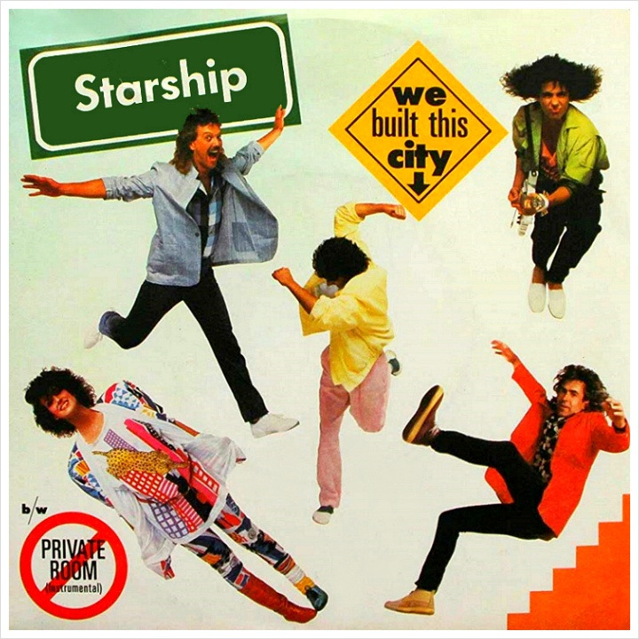

안녕하세요 라보엠입니다.
디즈니+ 오리지널 시리즈 파라다이스 Paradise는 디스토피아를 배경으로한 정치 스릴러로, 미국 대통령의 살인 사건을 둘러싼 음모와 비밀을 다루고 있습니다. 2편에서는 다음 세대의 아이들이 미디어실에서 1985년 Starship의 히트곡 "We Built This City"를 듣는 장면이 나옵니다. 디스토피아 세계에서 새로운 도시를 만들어서 생활하는 드라마의 내용과 어울리는 제목이죠, 이 노래는 로큰롤 문화와 도시의 정체성을 주제로 한 논란 속에서도 상업적 성공을 거둔 곡입니다.

Starship의 We Built This City 노래의 탄생과 배경
1985년 발매된 Starship의 "We Built This City"는 80년대를 대표하는 록 앤섬으로 자리잡았습니다. 이 곡은 Starship(구 Jefferson Starship)의 데뷔 싱글로, 앨범 Knee Deep in the Hoopla에 수록되었습니다.
노래의 탄생 비화는 흥미롭습니다. 원곡은 Bernie Taupin과 Martin Page가 작곡한 어두운 분위기의 곡이었습니다. 당시 로스앤젤레스의 라이브 클럽들이 폐업하면서 밴드들의 공연 장소가 사라지는 것을 비판하는 내용이었죠. 하지만 프로듀서 Peter Wolf의 손을 거치면서 밝고 경쾌한 팝 앤섬으로 탈바꿈했습니다. 원작자 Taupin은 이에 대해 "Peter Wolf가 데모를 듣고 완전히 바꿔놨다"고 회상했습니다.
표면적으로는 도시를 록앤롤로 세웠다는 자부심을 노래하지만, 실제로는 더 깊은 의미를 담고 있습니다.
Mickey Thomas는 "사람들이 후렴구에만 집중해서 가사의 진정한 의미를 놓친다"고 말했습니다. 그에 따르면 이 노래는 "클럽들이 문을 닫고, 사람들에게 어디로 가서 무엇을 들어야 하는지 강요하는 등 음악계에서 일어나는 많은 일들에 대한 항의"를 담고 있습니다.
상업적 성공과 비평
"We Built This City"는 발매 즉시 대중의 사랑을 받았습니다. Billboard Hot 100 차트 1위에 올랐고, 골드 인증을 받았으며, 그래미 노미네이트까지 되었습니다. 하지만 동시에 많은 비평가들의 혹평을 받았습니다. 2011년 Rolling Stone 독자 투표에서는 '80년대 최악의 노래'로 뽑히기도 했죠.
이런 극단적인 평가 차이는 Jefferson Airplane에서 Starship으로 이어지는 밴드의 변천사와 관련이 있습니다. 60년대 사이키델릭 록의 상징이었던 그들이 80년대 주류 팝으로 변모한 것에 대한 반감이 작용한 것으로 보입니다.
Starship의 We Built This City 노래 가사
We built this city
We built this city on rock and roll
Built this city
We built this city on rock and roll
Say you don't know me or recognize my face
Say you don't care who goes to that kind of place
Knee deep in the hoopla, sinking in your fight
Too many runaways eating up the night
Marconi plays the mamba, listen to the radio, don't you remember?
We built this city, we built this city on rock and roll
We built this city, we built this city on rock and roll
Built this city, we built this city on rock and roll
Someone's always playing corporation games
Who cares, they're always changing corporation names
We just want to dance here, someone stole the stage
They call us irresponsible, write us off the page
Marconi plays the mamba, listen to the radio, don't you remember?
We built this city, we built this city on rock and roll
We built this city, we built this city on rock and roll
Built this city, we built this city on rock and roll
It's just another Sunday in a tired old street
Police have got the choke hold, oh, then we just lost the beat
Who counts the money underneath the bar?
Who rides the wrecking ball into our guitars?
Don't tell us you need us 'cause we're the ship of fools
Looking for America, coming through your schools
Don't you remember? (Remember)
Marconi plays the mamba, listen to the radio, don't you remember?
We built this city, we built this city on rock and roll
We built this city, we built this city on rock and roll
Built this city, we built this city on rock and roll
Built this city, we built this city on rock and roll
Built this city, we built this city on rock and roll
We built, we built this city, yeah (Built this city)
We built, we built this city
We built, we built this city yeah (Built this city)
We built, we built this city
We built, we built this city yeah (Built this city)
We built, we built this city (Built this city)
논란에도 불구하고 "We Built This City"는 80년대를 대표하는 노래로 자리잡았습니다. 대중문화의 여러 영역에서 패러디되고 인용되며, 그 자체로 하나의 문화 아이콘이 되었습니다.
특히 가사 중 "We built this city on rock and roll"이라는 구절은 광범위하게 인용되고 있습니다. 심지어 월스트리트의 Michael Milken은 "We built this city on high-yield bonds"로 개사해 부르기도 했다고 합니다.
시리즈와 노래의 연관성
디즈니+ 오리지널 시리즈 Paradise의 2화에서 Starship의 "We Built This City"는 이 작품의 주제와 캐릭터 관계를 강화하는 중요한 역할을 하고 있습니다.
이 노래는 먼저 캐릭터 간의 관계를 심화시킵니다. 대통령의 아들 제레미와 콜린스의 딸 프레슬리가 이 곡을 공유하는 장면은 두 인물 사이의 연결고리를 형성하고 있습니다. 제레미의 음악 취향은 가족의 유산을 암시하고, 프레슬리에게는 도시의 허상과 대비되는 효과를 만듭니다. 또한, 이 노래는 작품의 테마적 아이러니를 강조합니다. "We built this city on rock and roll"이라는 가사는 인공 도시 '파라다이스'의 창조 신화와 대조를 이룹니다. 환경 재난의 피난처이자 권력자들의 통제 공간이라는 도시의 이중성이 노래의 메시지와 충돌하며 아이러니를 만들어냅니다.
시대적 향수와 서사 확장의 측면에서도 의미가 있습니다. 1980년대 곡이 미래 세계에서 재해석되면서, 과거와 현재의 시간대 교차를 강화하고 왜곡된 미래를 상징적으로 보여줍니다. 이 노래는 또한, 서스펜스 장치로 사용되고 있습니다. 제레미가 이 곡을 들으며 프레슬리를 격납고로 데려가는 장면은 도시 건설의 비밀과 연결되는 복선으로 해석될 수 있습니다.
이렇게 Paradise는 "We Built This City"를 통해 음악적 유머, 서사적 심볼, 세대 간 대화를 성취하며, 작품의 다층적 해석을 가능하게 하는 중요한 요소로 활용하고 있습니다.
맺음말
"We Built This City"는 80년대 음악의 변화를 상징적으로 보여주는 노래입니다. 60년대의 이상주의적 록에서 80년대의 상업적 팝으로의 전환, 그리고 그에 따른 논란을 모두 담고 있죠. 동시에 이 노래는 시대를 초월한 매력을 지니고 있습니다. 경쾌한 멜로디와 중독성 있는 후렴구는 여전히 많은 이들의 사랑을 받고 있습니다.
결국 "We Built This City"는 우리에게 음악의 본질에 대해 다시 한 번 생각해보게 만듭니다. 상업성과 예술성, 대중성과 진정성 사이에서 음악은 어떤 길을 걸어가야 할까요? 이 질문에 대한 답은 여전히 열려 있습니다.